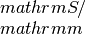

inputoutput module¶
This module, inputoutput.py handles input and
output related acitivites.
Contains various input and output routines for T4ME.
-
class
inputoutput.Param(data)¶ Bases:
objectYAML reader for the input paramters.
- Parameters
- dataiterable
yaml load (typically safe_load(open(yamlfilename),”r”)).
Notes
Read a YAML paramter file.
-
inputoutput.dump_bandstruct_line(bs, kstart, kend, filename='band', datatype='e', k_direct=True, itype=None, itype_sub=None)¶ Writes the energy or velocity dispersions extracted along a line to a file.
- Parameters
- bsobject
A Band() object containing the energies and velocity dispersions.
- kstartndarray
- Dimension: (3)
The start k-point vector in cartesian coordinates.
- kendndarray
- Dimension: (3)
The end k-point vector in cartesian coordinates.
- filenamestring, optional
The filename used to write the energy or velocity dispersions. Defaults to “band”.
- datatype{“e”,”v”}
Selects to write energy dispersions (“e”) or velocity dispersions (“v”).
- itypestring, optional
- Can be any of:{“linearnd”, “interpn”, “rbf”, “wildmagic”, “skw”}
The type of interpolate method to use. If not set, the parameter dispersion_interpolate_method in param.yml sets this.
- itype_substring, optional
- Can be any of:{“nearest”, “linear”}, when itype is set to interpn.{“multiquadric”, “inverse_multiquadric”, “gaussian”, “linear”,“cubic”, “quintic”, “thin_plate”}, when itype is set to rbfand when the Scipy variety is used.{“trilinear, tricubic_exact, tricubic_bspline, akima”},when itype is set to wildmagic.
The subtype of the interpolation method.
- Returns
- None
-
inputoutput.dump_density_of_states(bs, dos=None, dos_energies=None, filename='dos')¶ Writes the density of states to file.
- Parameters
- bsobject
A Bandstructure() object.
- dosndarray, optional
- Dimension: (N,M)
The density of states for N bands at M energy samplings If not supplied, set to bs.dos.
- dos_energiesndarray, optional
- Dimension: (M)
The M energy samples used for the density of state If not supplied, set to bs.dos_energies
- filenamestring, optional
The filename used to write the density of states. Default is “dos”.
-
inputoutput.dump_relaxation_time(tr, filename=None)¶ Writes the relaxation time to file.
- Parameters
- trobject
A Transport() object containing the relaxation time and other details related to the carrier transport.
- filenamestring, optional
The output filename, default is “scattering”. The string “_band_N” is added to this string, where N is the band number.
- Returns
- None
Notes
One file per band, filename “scattering_band_x”, where x is the band number. In each file the temperature dependence is blocked, while the carrier energy, total relaxation time and each individual relaxation times follow as columns for each block.
-
inputoutput.dump_transport_coefficients(tr, filename_tag=None)¶ Writes the transport coefficients to files
- Parameters
- trobject
A Transport() object that contains the transport coefficients
- filename_tagstring, optional
- If filename_tag is not an empty string, but a string x, theoutput filenames are:sigma_x: contains the electrical conductivity in units ofseebeck_x: contains the Seebeck coefficiens in units of
 lorenz_x: contains the Lorenz number in units ofkappa_x: contains the Seebeck coefficiens in units ofhall_x: the Hall coefficient (big R) in units of
lorenz_x: contains the Lorenz number in units ofkappa_x: contains the Seebeck coefficiens in units ofhall_x: the Hall coefficient (big R) in units of cc_x: the carrier concentration in units of
cc_x: the carrier concentration in units ofThe default is to write the files without the tag on the end. Consult header of the files for the ordering.
- Returns
- None
Notes
Each temperature steps have its own block.
-
inputoutput.end_message()¶ Prints an end message to the log file.
- Parameters
- None
- Returns
- None
-
inputoutput.file_handler(filename='', handler=None, status=None)¶ Open and close files
- Parameters
- filenamestring
Filename to be handled
- handlerobject, optional
A file object. If provided, this routine closes the file
- status{“w”, “r”, “a”}
The status, e.g. write, read, append etc.
- Returns
- file_handlerobject
A file object
-
inputoutput.readbandparam(location=None, filename=None)¶ Load the parameters in the bandstructure configuration file.
- Parameters
- locationstring, optional
The location of the bandstructure configuration file. Defaults to “input” directory in the current working directory.
- filenamestring, optional
The filename for the bandstructure configuration file. Defaults to “bandparam.yml”.
- Returns
- iterable
An iterable YAML object.
Notes
The current working directory is padded in front of any supplied location (or if path is given in the filename).
-
inputoutput.readcellparam(location=None, filename=None)¶ Load the parameters in the cell configuration file.
- Parameters
- locationstring, optional
The location of the cell configuration file. Defaults to the “input” directory in the current working directory.
- filenamestring, optional
The filename for the cell configuration file. Defaults to “cellparam.yml”.
- Returns
- iterable
An iterable YAML object.
Notes
The current working directory is padded in front of any supplied location (or if path is given in the filename).
-
inputoutput.readparam(location=None, filename=None)¶ Load the parameters in the general configuration file.
- Parameters
- locationstring, optional
The location of the general configuration file. Defaults to the “input” directory in the current working directory.
- filenamestring, optional
The filename for the general configuration file. Defaults to “param.yml”.
- Returns
- iterable
An iterable YAML object.
Notes
The current working directory is padded in front of any supplied location (or if path is given in the filename).
-
inputoutput.skw_warning()¶ An error for missing SKW.
-
inputoutput.spglib_error()¶ An error for missing Spglib interface.
-
inputoutput.start_message()¶ Prints a startup message to the log file.
- Parameters
- None
- Returns
- None
-
inputoutput.wildmagic_warning()¶ An error for a missing GeometricTools interface.